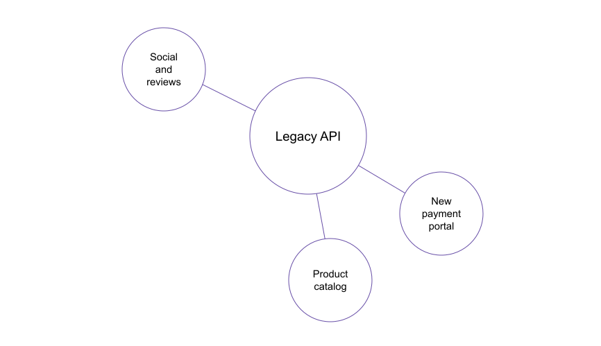
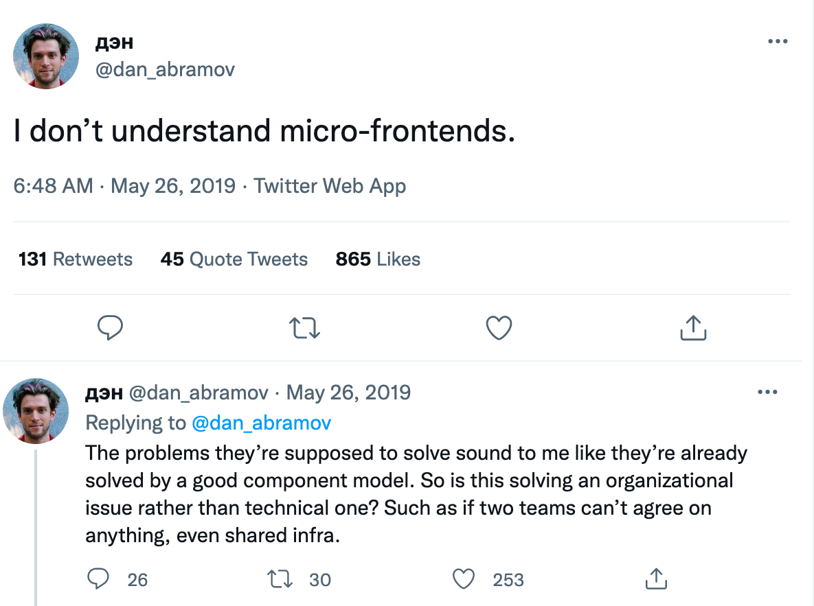
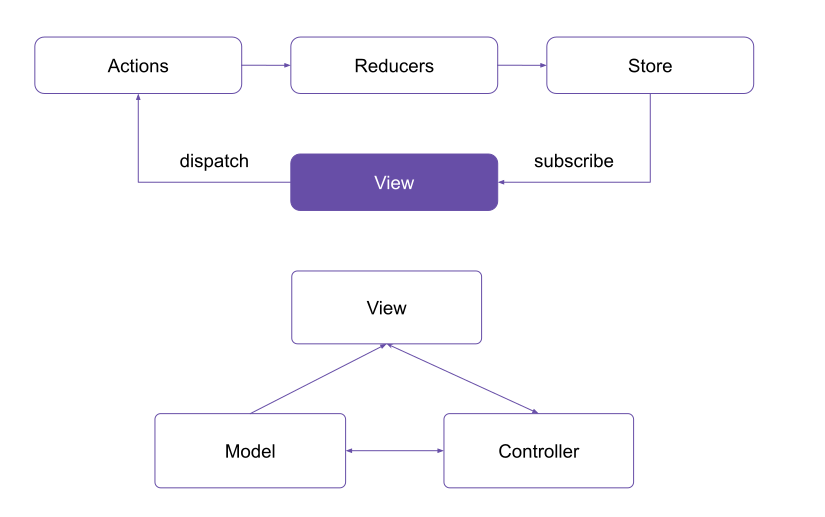

A common theme on the blog is the practicality of approaches (and avoiding development dogma). For example, Elm is a great technology stack. Still, it probably won’t be on most companies’ adoption lists because technologies like React or Angular are much more popular, and it’s easier to find developers. It’s also much more likely that those technologies will be supported in the future. Likewise, even though microservices are very popular, most projects won’t start out using a microservice architecture.
The Hybrid Monolith / Microservice Approach
A typical pattern encountered in the wild is the hybrid monolith + satellite microservices approach. This usually occurs something like this:
- A company starts out with a new product, and even though care is taken to split the app into modules, there are usually dependencies between modules - for example, code that hits the same database tables.
- A decision is taken to move to a microservice architecture as the product team grows.
- The team attempts some refactoring and isolates some parts of the monolith into individual microservices.
- New functionality will be developed as new microservices.
For example, a very simple schematic for an online store might look like this:
A common problem with breaking up modules into microservices is transactions, because even if individual pieces of code from various modules don’t call each other direcetly, they can still share data and trigger transactions in the database. And with microservices, transactions become distributed. And distributed transactions are hard.
Microfrontends
Microfontends, as their name suggests, are the front-end equivalent of microservices.
Dan Abramov (of Redux fame) famously said he doesn’t understand them. He also said that they can be replaced with a sound component system.
One could, of course, point out that microservices can be replaced with a sound module system for a backend API that doesn’t allow us to deploy the modules individually very quickly, nor is interoperability between different technologies easy.
Polyglot programming is touted as one of the advantages of microservices, but just because you can do something doesn’t mean you should. You almost certainly don’t want to start out with microservices written in distinct languages, but what’s great about them is you can integrate existing services written in different languages, which might occur as a result of acquiring another company (for example).
A Case Study
Imagine an application that was built with the legacy AngularJS API from Google. For any company that has invested years of development in a product built on it, the canceling of development on Agular by Google was terrible news. Working on discontinued tech isn’t great because browser support etc. is no longer provided. Patterns evolve, and it’s harder and harder to find developers willing to work on them. Let’s now say that the company decides to continue new development using React because it is the most popular technology out there and to use a bridge such as react2angular to bridge the connection between the apps. A potential approach would work as follows:
The core is in AnguarJS.
New routes/pages in the application are written in React and plugged in the. This is hardly ideal because Angular and React use vastly different architectural approaches.
- AngularJS uses two way databing.
- React/Redux uses a single directional flow, with prop drilling and callbacks for passing the information back.
The approach simply isn’t very good, so we’ll need another approach.
The Strangler Fig Pattern
This pattern was introduced by Martin Fowler and is an analogy for a type of plant that begins life as a vine growing alongside an older tree and as the vine grows, it spreads to completely consume and ultimately replace the host tree, leaving a new, strangler fig tree in its place.
In the context of microservices, we begin by adding a gateway on top of the monolith, and then gradually splitting off pieces from the monolith. The gateway acts as an abstraction layer and takes care of routing the request of the client to the appropriate functionality route. Independent modules care be easily abstracted away, but what we care is shared state / transactions. Since it’s recommended that microservices own their own data, we need to switch to distributed transactions such as sagas. A message broker is crucial in decoupling microservices.
Completely replacing a complex system can be a huge undertaking. Often, you will need a gradual migration to a new system, while keeping the old system to handle features that haven’t been migrated yet. However, running two separate versions of an application means that clients have to know where particular features are located. Every time a feature or service is migrated, clients need to be updated to point to the new location.
Decoupling frontend applications isn’t that much different. Let’s analyze a very poopular solution, SingleSPA. SingleSPA acts like the frontend equivalent of a gateway — it’s the outer shell that loads the various frontend bundles. The various microfrontends run as independent applications - the only way to make them communicate is through shared cookies / storage or push notifications.
While SingleSPA provides top level routing, each of the individual frontends will also have their own routing system. The MFEs are also isolated and will have their own reactivity system etc. A good practice to follow is to render based on route.
A central tenet of distributed systems is each piece needs to own its own data. Also, with web applications (they don’t have to be distributed), it’s better that each route in a client application loads the data it needs based on the URL parameters, than to rely on global state and prefetched data. This makes deep linking and refreshing pages much easier to implement — refreshing is simply a matter of updating the page route with different parameters. Since each page / route loads its data, they can be easily split into independent MFEs. With AngularJS apps, that is usually the case.
Note: global state objects such as the one introduced by Redux makes splitting React/Redux apps into smaller MFEs quite problematic. Before moving various pieces of the application into individual MFEs, it is recommended the frontend is decoupled from the global app state.
MVVM applications like KnockoutJS are easy to split because components usually have their own state. Angular’s services makes it harder to do this, for example, but they can be copied between MFEs, if needed.
The Problem with Redux
Since Redux state is global, technically each component can both access and modify each piece of state. In the worst case scenario, we could have something like this:
Redux is supposed to be your view model, NOT domain model. The domain model resides on the server in the database.
So this is correct:
This isn’t.
Unfortunately, if your application looks like the second, you are going to have a hard time breaking it up.
In reality, most
(next) Azure Hyprescale Named instances are a game changer